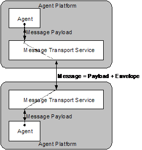
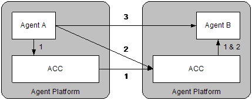

FOUNDATION FOR INTELLIGENT PHYSICAL AGENTS
FIPA Agent Message Transport Service
Specification
|
Document title |
FIPA Agent Message Transport Service Specification |
||
|
Document number |
SC00067F |
Document source |
FIPA TC Agent Management |
|
Document status |
Standard |
Date of this status |
2002/12/03 |
|
Supersedes |
FIPA00024 |
||
|
Contact |
fab@fipa.org |
||
|
Change history |
See Informative Annex A — ChangeLog |
||
©
1996-2002 Foundation for Intelligent Physical Agents
http://www.fipa.org/
Geneva, Switzerland
|
Notice |
|
Use of the technologies described in this specification may infringe patents, copyrights or other intellectual property rights of FIPA Members and non-members. Nothing in this specification should be construed as granting permission to use any of the technologies described. Anyone planning to make use of technology covered by the intellectual property rights of others should first obtain permission from the holder(s) of the rights. FIPA strongly encourages anyone implementing any part of this specification to determine first whether part(s) sought to be implemented are covered by the intellectual property of others, and, if so, to obtain appropriate licenses or other permission from the holder(s) of such intellectual property prior to implementation. This specification is subject to change without notice. Neither FIPA nor any of its Members accept any responsibility whatsoever for damages or liability, direct or consequential, which may result from the use of this specification. |
Foreword
The Foundation for Intelligent Physical Agents (FIPA) is an international organization that is dedicated to promoting the industry of intelligent agents by openly developing specifications supporting interoperability among agents and agent-based applications. This occurs through open collaboration among its member organizations, which are companies and universities that are active in the field of agents. FIPA makes the results of its activities available to all interested parties and intends to contribute its results to the appropriate formal standards bodies where appropriate.
The members of FIPA are individually and collectively committed to open competition in the development of agent-based applications, services and equipment. Membership in FIPA is open to any corporation and individual firm, partnership, governmental body or international organization without restriction. In particular, members are not bound to implement or use specific agent-based standards, recommendations and FIPA specifications by virtue of their participation in FIPA.
The FIPA specifications are developed through direct involvement of the FIPA membership. The status of a specification can be either Preliminary, Experimental, Standard, Deprecated or Obsolete. More detail about the process of specification may be found in the FIPA Document Policy [f-out-00000] and the FIPA Specifications Policy [f-out-00003]. A complete overview of the FIPA specifications and their current status may be found on the FIPA Web site.
FIPA is a non-profit association registered in Geneva, Switzerland. As of June 2002, the 56 members of FIPA represented many countries worldwide. Further information about FIPA as an organization, membership information, FIPA specifications and upcoming meetings may be found on the FIPA Web site at http://www.fipa.org/.
Contents
2 Agent Message Transport Reference Model
3.1.1 Updating Message Envelope Information
3.1.2 Additional Message Envelope Parameters
3.2 Agent Identifiers and Transport Addresses.
3.3 Agent Communication Channel
3.3.3 Message Handling Behaviour
3.3.4 Message Envelope Interpretation
3.3.6 Handling a Single Receiver
3.3.7 Handling Multiple Transport Addresses for a Single Receiver
3.3.8 Handling Multiple Receivers
3.3.10 Using a Name Resolution Service
3.3.11 Error and Confirmation Messages
3.4 Using the Message Transport Service
3.5 Querying Message Transport Service Polices and Capabilities
3.5.1 Agent Platform Transport Descriptions
4 Agent Message Transport Ontology
4.1.1 Message Envelope Description
4.1.2 Received Object Description
6 Informative Annex A — ChangeLog
6.1 2001/10/08 - version D by FIPA Architecture Board
This document deals with message transportation between inter-operating agents and also forms part of the FIPA Agent Management specification (see [FIPA00023]). It contains specifications for:
· A reference model for an agent Message Transport Service, and,
· Definitions for the expression of message transport information to an agent Message Transport Service.
The reference model for agent message transport comprises three levels (see Figure 1):
1. The Message Transport Protocol (MTP) is used to carry out the physical transfer of messages between two ACCs.
2. The Message Transport Service (MTS) is a service provided by the AP to which an agent is attached. The MTS supports the transportation of FIPA ACL messages between agents on any given AP and between agents on different APs.
3. The ACL represents the payload of the messages carried by both the MTS and MTP.

Figure 1: Message Transport Reference Model
In its abstract form, a message is made up of two parts: a message envelope expressing transport information and a message payload comprising the ACL message of the agent communication.
For the purposes of message interpretation by an agent:
· ACL semantics are defined only over the ACL message delivered in the message payload of a message (see [FIPA00023]).
· All information in the message envelope is supporting information only. How and if this information is used to by an agent for any kind of additional inference is undefined by FIPA. However, under some circumstances, an agent might be required to process the envelope information in order to properly interpret the received message payload; for instance when the payload has been encrypted or in order to discover the ACL representation used by the sender.
The MTS provides a mechanism for the transfer of ACL messages between agents. The agents involved may be local to a single AP or on different APs. On any given AP, the MTS is provided by an Agent Communication Channel (ACC).
Any MTP may use a different internal representation to describe a message envelope, but must express the same terms, represent the same semantics and perform the corresponding actions.
The following are general statements about the form of a message envelope:
· A message envelope comprises a collection of parameters,
· A parameter is a name/value pair,
· A message envelope contains at least the mandatory to, from, date and acl-representation parameters, and,
· A message envelope can contain optional parameters.
Each ACC handling a message may add new information to the message envelope, but it may never overwrite existing information. ACCs can add new parameters to a message envelope which override existing parameters that have the same parameter name; the mechanism for disambiguating message envelope entries is specified by each concrete message envelope syntax.
To update a value in one of the envelope parameters, the ACC must add a new copy of the message envelope parameter (containing the new value) to the envelope.
Since this mechanism permits multiple occurrences of the same parameters in a message envelope (with different values), each concrete message envelope syntax must provide a general mechanism for identifying which copy of the parameter is current..
Additional parameters not defined in this document can be added to the envelope as well as to all the frames defined in this specification. The prefatory string “X-” must be used for the names of these non-FIPA standard additional parameters and implementations are free to ignore such additional parameters.
Agent Identifiers (AIDs) and transport addresses are defined in [FIPA00023].
The ACC is an entity providing a service directly to the agents on an AP. The ACC may access information provided by the other AP services (such as the AMS and DF) to carry out its message transport tasks.
When messages are received over a message interface advertised as implementing one of the FIPA standard MTPs, these messages must be handled as specified in Section 3.3.3.
FIPA does not specify how agents communicate using proprietary interfaces with the MTS.
To provide the MTS, an ACC must transfer the messages it receives in accordance with the transport instructions contained in the message envelope. An ACC is only required to read the message envelope; it is not required to parse the message payload. In performing message transfer tasks, the ACC may be required to obtain information from the AMS or DF on its own AP. Some implementations of ACCs may provide some form of buffering capability to help agents manage their messages.
The message forwarding behaviour of an ACC is determined by the instructions for message delivery that are expressed in the message envelope (see Table 1).
|
Parameter |
Description |
|
to |
If no intended-receiver parameter is present, then the information in this parameter is used to generate intended-receiver field for the messages the ACC subsequently forwards. |
|
from |
If required, the ACC returns error and confirmation messages to the agent specified in this parameter. |
|
comments |
None. |
|
acl-representation |
None. This information is intended for the final recipient of the message. |
|
payload-length |
The ACC may use this information to improve parsing efficiency. |
|
payload-encoding |
None. This information is intended for the final recipient of the message. |
|
date |
None. This information is intended for the final recipient of the message. |
|
intended-receiver |
An ACC uses this parameter to determine where this instance of a message should be sent. If this parameter is not provided, then the first ACC to receive the message should generate an intended-receiver parameter using the to parameter. |
|
received |
A new received parameter is added to the envelope by each ACC that the message passes through. Each ACC handling a message must add a completed received parameter. If an ACC receives a message it has already stamped, it is free to discard the message without any need to generate an error message. |
|
transport-behaviour |
Reserved for future use. |
Table 1: Agent Communication Channel Interpretation of Message Envelope
The recipients of a message are specified in the to parameter of a message envelope and take the form of AIDs. Depending upon the presence of intended-receiver parameter, the ACC forwards the message in one of the following ways:
· If an ACC receives a message envelope without an intended-receiver parameter, then it generates a new intended-receiver parameter from the to parameter (possibly containing multiple AIDs). It may also generate multiple copies of the message with different intended-receiver parameters if multiple receivers are specified. In all cases, the ACC is required to process all entries in the to field parameter and enforced not to add and not to remove any AID that was contained in the original message. The intended-receiver parameters form a delivery path showing the route that a message has taken.
· If an ACC receives a message envelope with an intended-receiver parameter, this is used for delivery of this instance of the message and the to parameter is ignored.
· If an ACC receives a message envelope with more than one intended-receiver parameter, the most recent is used.
Before forwarding the message, the ACC adds a completed received parameter to the message envelope. Once an ACC has forwarded a message it no longer needs to keep any record of the existence of that message.
In delivering a message to a single receiver specified in the to or intended-receiver parameters of a message envelope, the ACC forwards the message to one of the addresses in the addresses parameter of the AID. If this address leads to another ACC, then it is the task of the receiving ACC to deliver the message to the receiving agent (if the agent is resident on the local AP) or to forward it on to another ACC (if the agent is not locally resident).
The AID given in the to or intended-receiver parameter (in the case of both parameters being present, the information in the intended-receiver parameter is used) of a message envelope may contain multiple transport addresses for a single receiving agent. The ACC uses the following method to try to deliver the message:
· Try to deliver the message to the first transport address in the addresses parameter; the first is chosen to reflect the fact that the transport address list in an AID is ordered by preference.
· If this fails, because the agent or AP was not available or because the ACC does not support the appropriate message transport protocol, etc., then the ACC creates a new intended-receiver parameter containing the AID with the failed transport address removed. The ACC then attempts to send the message to the next transport address in AID in the intended receiver list (now the first in the newly created intended-receiver parameter).
· If delivery is still unsuccessful when all transport addresses have been tried (or the AID contained no transport addresses), the ACC may try to resolve the AID using the name resolution services listed in the resolvers parameter of the AID. Again, the name resolution services should be tried in the order of their appearance.
Finally, if all previous message delivery attempts have failed, then an appropriate error message for the final failure is passed back to the sending agent (see Section 3.3.11).
An ACC uses the following rules in delivering messages to multiple intended receivers[1]:
· If an ACC receives a message envelope with no intended-receiver parameter and a to parameter containing more than one AID, it may or may not split these up to form separate messages[2]. Each message would contain a subset of the agents named in the to and intended-receiver parameters.
· If an ACC receives a message envelope with an intended-receiver parameter containing more than one AID, it may or may not split these up to form separate messages.
· If an ACC splits a message as described above, then it is enforced not to add and not to remove any AID that was contained in the original message
The resulting messages are handled as in the single receiver case (see Section 3.3.6).
Once a message has arrived at ACC which can directly deliver it to the agent or agents named in the intended-receiver parameter of the message envelope, this ACC should pass the message to the agents concerned. This specification does not specify how final message delivery is performed; the message may be passed to the agents using any of the ACC proprietary or standard MTP interfaces. An ACC should deliver the whole message, including the message envelope, to the receiving agent. However, particular AP implementations may provide middleware layers to free agents from the task of processing the envelope.
If an ACC receives a message it has already stamped, then it is free to discard the message without any need to generate an error message.
In certain circumstances, if an AID for a receiver contains no transport addresses then the ACC may try to resolve the AID by contacting one of the entities listed in the resolvers parameter of the AID, as specified in [FIPA00023].
Error and confirmation messages sent to a sending agent by the MTS are in the form of ACL messages over the MTS. These MTS information messages are sent on behalf of the AMS agent responsible (the sender parameter of the message must be set the local AMS’s AID) of the ACC’s AP[3].
If an error message needs to be returned, the message generated must follow the exception model defined in [FIPA00023] such that:
· The communicative act is a failure,
· The failed action is the ACL message that was not delivered properly,
· The predicate symbol is internal-error, and,
· The argument parameter is a string describing the error which occurred (the form and content of which is implementation-dependent and can be ignored by implementations).
This generated failure ACL message must include the same conversation-id value as the message that was not delivered and must contain the expression in the reply-with field (of the message that was not delivered) in its in-reply-to parameter.
An agent has three options when sending a message to another agent resident on a remote AP (see Figure 2):
1. Agent A sends the message to its local ACC using a proprietary or standard interface. The ACC then takes care of sending the message to the correct remote ACC using a suitable MTP. The remote ACC will eventually deliver the message.
2. Agent A sends the message directly to the ACC on the remote AP on which Agent B resides. This remote ACC then delivers the message to B. To use this method, Agent A must support access to one of the remote ACC’s MTP interfaces.
3. Agent A sends the message directly to Agent B, by using a direct communication mechanism. The message transfer, addressing, buffering of messages and any error messages must be handled by the sending and receiving agents. This communication mode is not covered by FIPA.

Figure 2: Three Methods of Communication between Agents on Different Agent Platforms[4]
An agent receives an entire message including both the message envelope and message payload. Consequently, the receiving agent has access to all of the message transport information expressed in the message envelope, such as encryption details, ACL representation information, the delivery path of the message, etc.
An AP must support queries about its message transport policies and capabilities. Information pertinent to the MTS (such as the particular MTPs supported by an ACC) is given in the AP description, that can be accessed by sending a get-description request to an AMS (see [FIPA00023]).
The transport description forms part of an AP and is expressed in fipa-sl0. The following transport description is for an AP which supports IIOP and HTTP based transports:
(ap-description
:name myAPDescription
:ap-services
(set
(ap-service
:name myIIOPMTP
:type fipa.mts.mtp.iiop.std
:addresses
(sequence
corbaloc:iiop:agents.fipa.org:10100/acc
IOR:00000000002233
corbaname::agents.fipa.org:10000/nameserver#acc))
(ap-service
:name myHTTPMTP
:type fipa.mts.mtp.http.std
:addresses
(sequence
http://agents.fipa.org:8080/acc)))
For more information on how to generate a concrete representation of a transport description, see [FIPA00061] and [FIPA00008].
This section describes a set of frames that represent the classes of objects in the domain of discourse within the framework of the fipa-agent-management ontology. The closure of symbols of this ontology can be obtained through the companion document [FIPA00023] that specifies additional set of frames of this ontology.
The following terms are used to describe the objects of the domain:
· Frame. This is the mandatory name of this entity that must be used to represent each instance of this class.
· Ontology. This is the name of the ontology, whose domain of discourse includes the parameters described in the table.
· Parameter. This is the mandatory name of a parameter of this frame.
· Description. This is a natural language description of the semantics of each parameter.
· Presence. This indicates whether each parameter is mandatory or optional.
· Type. This is the type of the values of the parameter: Integer, Word, String, URL, Term, Set or Sequence.
· Reserved Values. This is a list of FIPA-defined constants that can assume values for this parameter.
|
Frame Ontology |
envelope fipa-agent-management |
|
||
|
Parameter |
Description |
Presence |
Type |
Reserved Values |
|
to |
This contains the names of the primary recipients of the message. |
Mandatory |
Sequence of agent-identifier |
|
|
from |
This is the name of the agent who actually sent the message. |
Mandatory |
agent-identifier |
|
|
comments |
This is a comment in the message envelope. |
Optional |
string |
|
|
acl-representation |
This is the name of the syntax representation of the message payload. |
Mandatory |
string |
fipa.acl.rep.bitefficient.std fipa.acl.rep.string.std fipa.acl.rep.xml.std |
|
payload-length |
This contains the length in bytes of the message payload. |
Optional |
string |
|
|
payload-encoding |
This contains the language encoding of the message payload. |
Optional[5] |
string |
US-ASCII ISO-8859-1 ... ISO-8859-9 UTF-8 Shift_JIS EUC-JP ISO-2022-JP ISO-2022-JP-2 |
|
date |
This contains the creation date and time of the message envelope |
Mandatory |
date |
|
|
intended-receiver |
This is the name of the agents to whom this instance of a message is to be delivered. |
Optional |
Sequence of agent-identifier |
|
|
received |
This is a stamp representing the receipt of a message by an ACC. |
Optional |
received-object |
|
|
transport-behaviour |
This contains the transport requirements of the message. |
Optional |
(Undefined)[6] |
|
|
Frame Ontology |
received-object fipa-agent-management |
|
||
|
Parameter |
Description |
Presence |
Type |
Reserved Values |
|
by |
The URL representing the transport address of the receiving ACC. |
Mandatory |
url |
|
|
from |
The URL representing the transport address of the sending ACC. |
Optional |
url |
|
|
date |
The date when a message was received. |
Mandatory |
date |
|
|
id |
The unique identifier of a message. It is required that uniqueness be guaranteed within the scope of the sending ACC only. |
Optional |
string |
|
|
via |
The type of MTP the message was delivered over. |
Optional |
string |
fipa.mts.mtp.iiop.std fipa.mts.mtp.http.std |
[FIPA00007] FIPA Content Languages Specification. Foundation for Intelligent Physical Agents, 2000. http://www.fipa.org/specs/fipa00007/
[FIPA00008] FIPA SL Content Language Specification. Foundation for Intelligent Physical Agents, 2000. http://www.fipa.org/specs/fipa00008/
[FIPA00014] FIPA Nomadic Application Support Specification. Foundation for Intelligent Physical Agents, 2000. http://www.fipa.org/specs/fipa00014/
[FIPA00023] FIPA Agent Management Specification. Foundation for Intelligent Physical Agents, 2000. http://www.fipa.org/specs/fipa00023/
[FIPA00061] FIPA Agent Communication
Language Specification. Foundation for Intelligent
Physical Agents, 2000.
http://www.fipa.org/specs/fipa00061/
[ISO8601] Date Elements and
Interchange Formats, Information Interchange-Representation of Dates and Times.
International Standards Organisation, 1998.
http://www.iso.ch/cate/d15903.html
[RFC822] Uniform Resource Identifiers: Generic Syntax. Request for Comments, 1992. http://www.ietf.org/rfc/rfc0822.txt
[RFC2396] Standard
for the Format of APRA Internet Text Messages. Request for Comments, 1998.
http://www.ietf.org/rfc/rfc2396.txt
Page 8, lines 315-319: Removed section 3.5.2 which included references to obsolete specifications FIPA00077 and FIPA00078
Entire document: Changed all symbols to lowercase
Entire document: Replaced all references to message body and message content with message payload
Entire document: Removed the symbol : from all the parameter names
Entire document: Removed reference to [FIPA00073] and to WAP specifications
Entire document: Removed the encrypted parameter and references to it
Page 2, Figure 1: Figure redrawn to be more accurate
Page 2, line 108: Added a sentence to clarify that agents might need processing of the envelope
Page 3, line 144: Made clear the usage of additional message envelope parameters
Page 4, lines 157-160: Deleted paragraph on baseline MTP
Page 4, line 178: Added a sentence about the possibility when an ACC can discard a stamped message
Page 4, line 178: transport-behaviour parameter reserved for future use
Page 5, line 189: Added sentence to reinforce a requirement of ACC to process all to parameter entries
Page 6, line 236: Added sentence to reinforce a requirement of ACC to maintain the AID list in an original message
Page 6, line 246: Added a sentence about the possibility when an ACC can discard a stamped message
Page 6, lines 249-250: Deleted sentence on the interface to the name resolution service
Page 6, line 262: Added clarification on the generation of failure message for non-delivered messages
Page 6, lines 265-266: Clarified that implementation can ignore arguments of internal-error
Page 7, lines 303-311: Modified the example according to the new definition of ap-description
Page 9, line 325: Added a note that references [FIPA00023] for the closure of fipa-agent-management ontology
Page 9, line 344: Added reserved values for acl-representation
Page 9, line 344: Relaxed the requirement that the parameter date had to be added by the sending agent
Page 10, line 346: Added requirement for sending ACC to generate unique id
Page 10, line 346: Added reserved values for the via parameter
Page 10, lines 348-351: Removed definitions of ap-transport-description and mtp-description made obsolete by the new definition of ap-description in [FIPA00023]
Entire document: Promoted to Standard status
[1] An ACC may decide to optimise the delivery of messages where a given message is intended for multiple receivers that reside on the same host. However, whether an ACC decides to make this optimisation or not, the semantics of message delivery within an ACC must remain the same. This is so that optimised ACCs and non-optimised ACCs can inter-operate.
[2] Not splitting up messages may be more efficient when several copies would be delivered to the same address.
[3] How the message is generated (whether by the AMS or by the ACC on behalf of the AMS) is not specified by FIPA.
[4] A fourth possibility (not illustrated) is that instead of completing the last two stages of the first path, the ACC on the first platform contacts Agent B directly – this depends upon the address that the ACC is delivering to.
[5] If this field is not present, the default value US-ASCII is assumed for the content encoding.
[6] Reserved for future use.